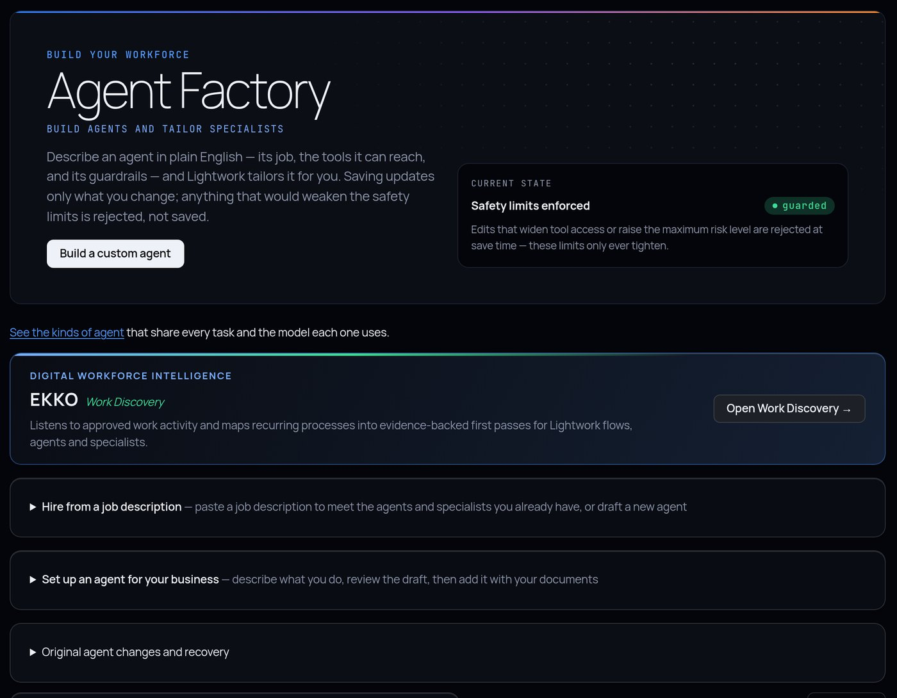
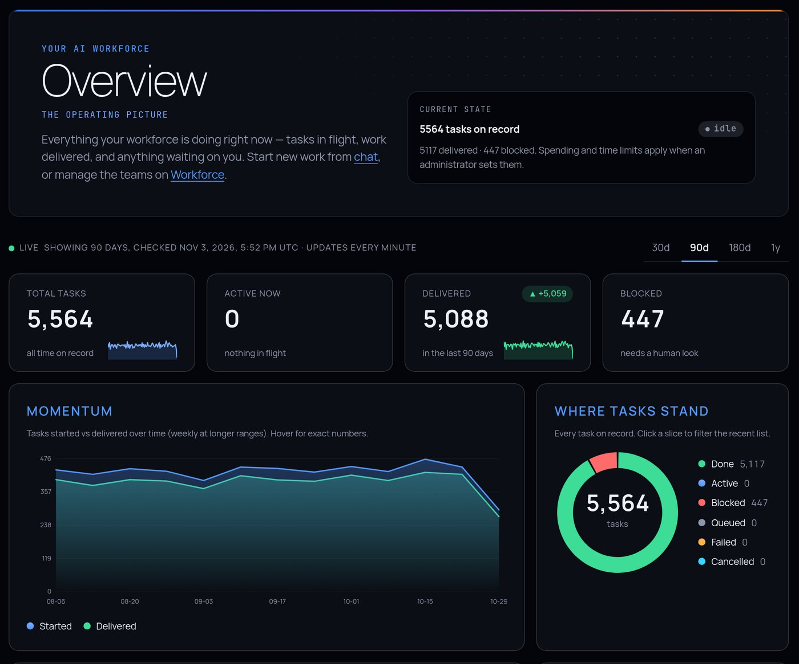

Tell Lightwork what you need in plain words. An orchestrator plans the work, hands the pieces to specialist agents that run in parallel on the models you choose, uses your tools and documents, checks the result and brings back a finished answer. From the chat, your team's messaging app, the command line, an API call or a schedule.
You describe the outcome. Lightwork decides how to get there, puts a team on it, and keeps going until the work is done or it needs you.
It looks like the chat apps you already use. The difference is what happens after you press Enter.
Paste a job description and Lightwork matches it to the specialists you already have or drafts a new agent. Describe your business and it proposes one, then grounds it in your documents. Or start from a built-in specialist and tailor its job, its tools and its limits in plain English.
You can also teach by example: lightwork learn-demo turns a record of a person doing the job into a draft agent, with a final human-review step built in. Nothing activates until you approve it.

For work that happens the same way every time, build it once and let it start on its own. The workflow engine is optional and starts switched off; schedules are built in.
lightwork schedule runs any goal on a cron schedule, no workflow engine required.Connect the systems you run on, and message Lightwork like a colleague. A change to an outside system is shown in full and sent only after a person approves it.
Lightwork keeps what it learns about your business, you decide what it keeps, and you never have to take an answer on faith.
Successful runs become proposed skills. A person reviews and admits each one before it is used again, and you can write skills in plain English.
When the agents are idle, Lightwork replays recent wins and misses and distills the recurring ones into proposed skills.
One search across your documents, learned skills, past decisions and the Operating Record. Inside Cortex
Every plan, tool call and result, in order and in plain words. Branch a run at a decision and compare the paths side by side.
Render a task as a captioned walkthrough or export it as a tutorial, and get a plain-language account of what happened.
Spreadsheets with their formulas intact, Office conversion, scanned PDFs with optional OCR, and code run in the sandbox you choose.
Choose a model for each role; Settings lists the models your keys can actually reach.

Every action passes the same five checks before it runs, and lands in a signed record you can verify offline. You run it on your own infrastructure, with your own keys.
Lightwork is open source under the Apache License 2.0. Install it from source, open the dashboard, connect a model and type what you need.